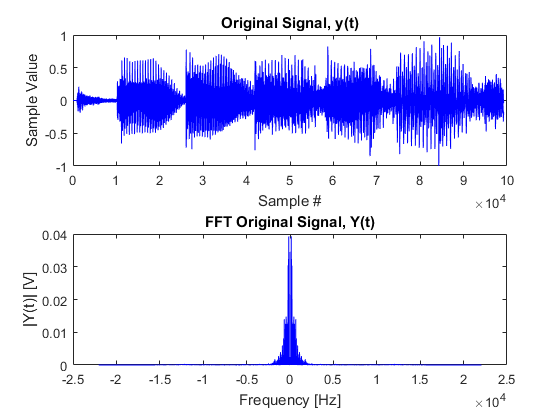
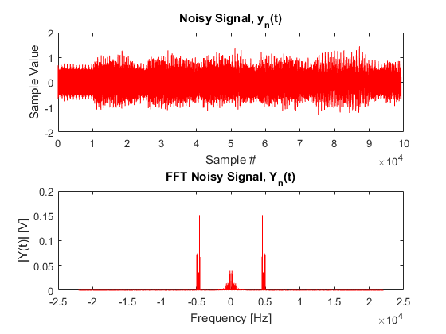
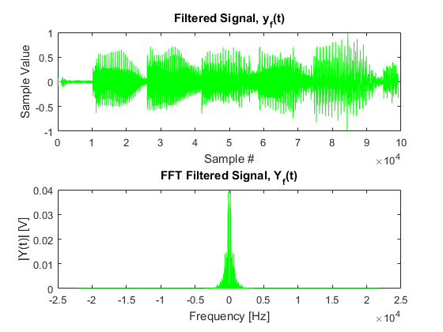

ECEN 314: Signals and Systems
Mathematical descriptions of signals & systems, along with LTI systems, Fourier, Laplace transforms. Summer 2017 @ Texas A&M University.
Final MATLAB Project
Contents
TITLE: SIGNALS & SYSTEMS MATLAB PROJECT
% Oneal Abdulrahim % ECEN 314-300, Summer 2017 % Due: Friday, August 4th
Assignment Description
%{ Communication systems are often subject to interference from a variety of sources. In this project, you will use MATLAB to read a wav file, simulate the effect of narrowband interference and process the distorted signal to recover the original signal. You should write a MATLAB program that performs the following functions: (25 points) Read a speech file which is available in wav format. The file anykey.wav is available for download. But I encourage you to find your own wav file on the internet or you can also create your own speech file if you prefer. Use wavread function in MATLAB to read the file. Play the sound file through the speakers and observe that you can hear the speech file. Plot the magnitude of the Fourier transform of the speech file. The x-axis should be in rad/s. (25 points) Simulate the effect of interference. We will model the interference as being composed of 10 cosinusoid functions at frequencies 4500,4550,..,4950 Hz whose amplitudes are all Gaussian random variables with zero mean and variance 1/10. Play this through the speakers and observe that you can see the effect of interference. Plot the magnitude of the Fourier transform of the speech file with interference. You should see that the interference is dominant. (50 points) Design an LTI system to remove the interference by designing a filter that cuts off all frequencies greater than 4000 Hz. Process the received signal by passing it through a LTI system to mitigate the effect of interference. Play this through the speakers and observe that the effect of interference has been largely mitigated. Notice here that you are processing the received signal in the discrete-time domain. The conv function in MATLAB can be used to perform convolution. Another alternative is to use the filter command. Think about how you may have to truncate any impulse responses that are of infinite duration. Plot the magnitude of the Fourier transform of the processed signal as a function of w. The units for w should be rad/s. %}
Preliminary Housekeeping
clear;clc;
Part I - Analyze & Play Audio File
% Loading audio file and only using small snippet, from 01:47:30 to % 01:49:45. The filename is Reeperbahn.mp3. Track is Reeperbahn by Pryda INFO = audioinfo('Reeperbahn.mp3'); % Loading track info start_time = 107.5; % [s], @01:47:30 end_time = 109.75; % [s], @01:49:45 [y, Fs] = audioread('Reeperbahn.mp3', [(start_time * INFO.SampleRate) (end_time * INFO.SampleRate)]); % Fs = 44100 samples/second [Hz] %%%%% TEST %%%%% %INFO = audioinfo('anykey.wav'); %[y, Fs] = audioread('anykey.wav'); % Create object for playing through speakers PLAYER = audioplayer(y, Fs); play(PLAYER); % Play current snip of track % Calculate FFT N = 2^20; % TEST %N = length(0:1/Fs:end_time - start_time - 1/Fs); % # of points in DTFT Y = fftshift(fft(y, N) / length(y)); % FT w/ wav sampling rate f = -Fs/2:Fs/N:Fs/2-Fs/N; % Pretty plots figure('NumberTitle', 'off', 'Name', 'Part I: No Noise'); % Original Signal Sample Spectrum (Soundwaves) subplot(2, 1, 1); plot(y, 'b'); title('Original Signal, y(t)'); xlabel('Sample #'); ylabel('Sample Value'); % Values are MATLAB normalized, y = [-1,1] % Fourier Transformed Frequency Spectrum subplot(2, 1, 2); plot(f', abs(Y), 'b'); % magnitude of Y title('FFT Original Signal, Y(t)'); xlabel('Frequency [Hz]'); ylabel('|Y(t)| [V]');

PART II - Add Artificial Noise
pause(4); % pause for player noise_mu = 0; % mean noise_sigma = 1/10; % variance y_noisy = y(:,1); % initialize noisy signal to original signal A = noise_mu + noise_sigma.*randn(10,1); % random amplitudes t = (1:length(y_noisy)) * 1/Fs; % seconds % Introduce noise by 10 random signal addition for frequency = 4500:50:4950 % frequency range was given 4500 - 4950 y_noisy = y_noisy + A((frequency - 4500) / 50 + 1) * cos(2 * pi * frequency * t'); end PLAYER = audioplayer(y_noisy, Fs); play(PLAYER); % Play current snip of track % Calculate FFT Y_noisy = fftshift(fft(y_noisy, N) / length(y_noisy)); % FT w/ wav sampling rate % Pretty plots figure('NumberTitle', 'off', 'Name', 'Part II: Noisy'); % Noisy Signal Sample Spectrum (Soundwaves) subplot(2, 1, 1); plot(y_noisy, 'r'); title('Noisy Signal, y_n(t)'); xlabel('Sample #'); ylabel('Sample Value'); % Values are MATLAB normalized, y = [-1,1] % Fourier Transformed Frequency Spectrum subplot(2, 1, 2); plot(f, abs(Y_noisy), 'r'); % magnitude of Y title('FFT Noisy Signal, Y_n(t)'); xlabel('Frequency [Hz]'); ylabel('|Y(t)| [V]');

PART III - Filtering
pause(4); % pause for player Fc = 4000; % Cut off frequency % I did some research to find ways to make filters in MATLAB % This one is low-pass Butterworth filter of order 25 [b,a] = butter(25, (Fc-500)/(Fs/2), 'low'); y_filtered = filter(b,a,y_noisy); % Filtered signal PLAYER = audioplayer(y_filtered, Fs); play(PLAYER); % Play current snip of track % Calculate FFT Y_filtered = fftshift(fft(y_filtered, N) / length(y_filtered)); % FT w/ wav sampling rate % Pretty plots figure('NumberTitle', 'off', 'Name', 'Part III: Filtered'); % Noisy Signal Sample Spectrum (Soundwaves) subplot(2, 1, 1); plot(y_filtered, 'g'); title('Filtered Signal, y_f(t)'); xlabel('Sample #'); ylabel('Sample Value'); % Values are MATLAB normalized, y = [-1,1] % Fourier Transformed Frequency Spectrum subplot(2, 1, 2); plot(f, abs(Y_filtered), 'g'); % magnitude of Y title('FFT Filtered Signal, Y_f(t)'); xlabel('Frequency [Hz]'); ylabel('|Y(t)| [V]');
